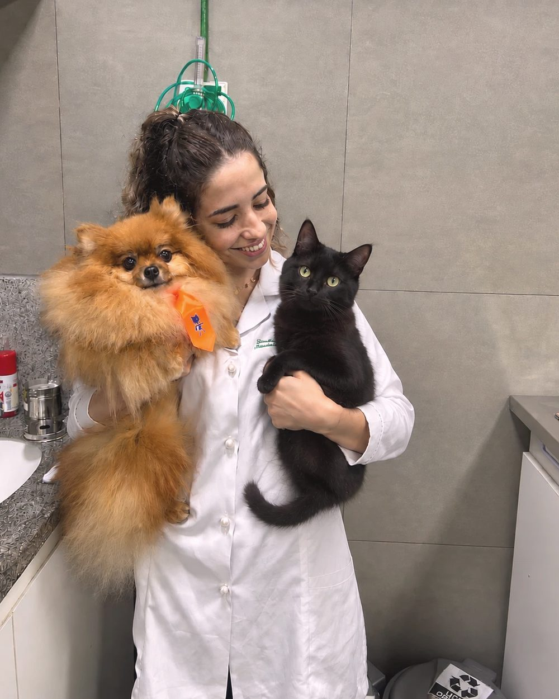
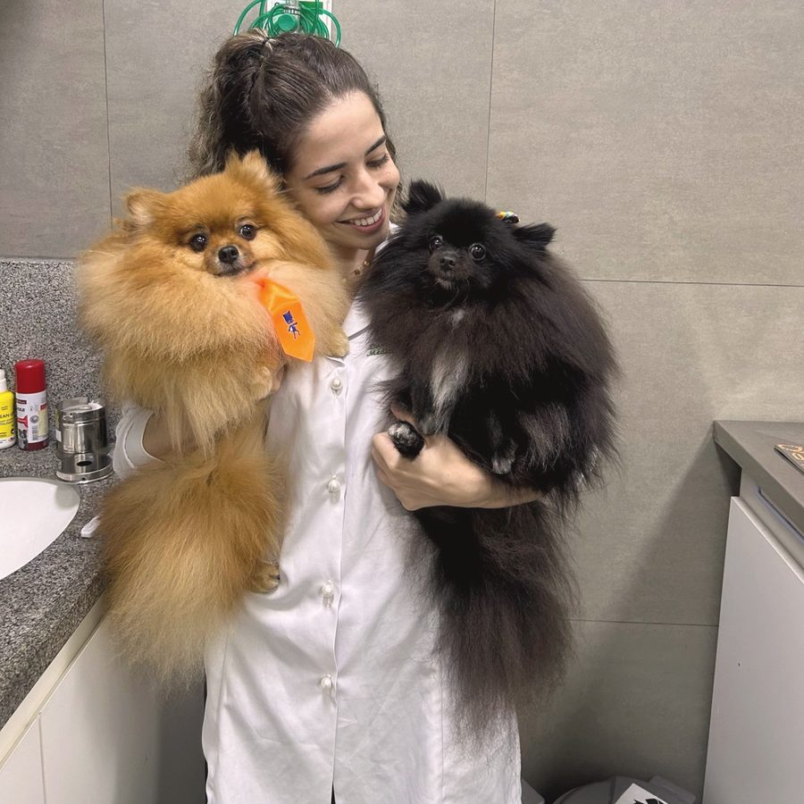
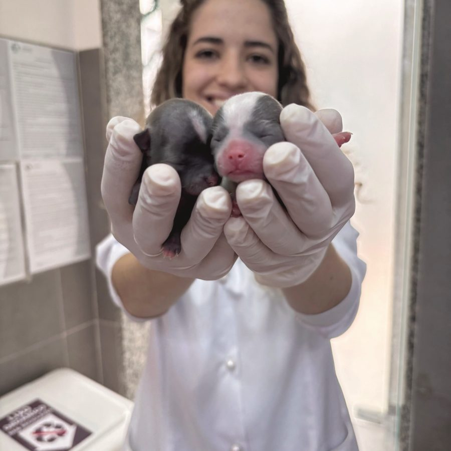
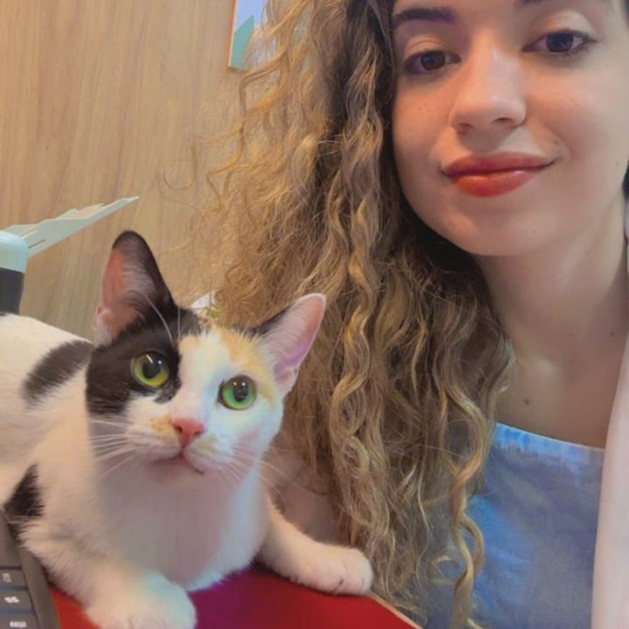

Lorena Siqueira
Médica Veterinária
CRMV-RJ 18798
Cada paciente é único e merece o melhor cuidado.
Role para entrar

Sobre
Medicina veterinária
com escuta
A Dra. Lorena Siqueira atende cães e gatos de forma particular, com tempo para ouvir a história de cada animal e da família. Toda consulta começa por uma avaliação completa, e o protocolo de vacinas e preventivos é individualizado para cada paciente.
Regiões de atendimento
Rio de Janeiro
Zona Sul, Centro, Tijuca e Barra da Tijuca
Niterói
Icaraí, Santa Rosa, Centro e Região Oceânica
Outros bairros sob consulta, conforme a agenda.



Serviços
Atendimento particular para
cães e gatos
Consultas
Avaliação clínica completa Retorno e acompanhamento Orientação sobre rotina e prevenção
Vacinação
Cães: polivalente, antirrábica, gripe canina e giárdia Gatos: polivalente e antirrábica Avaliação antes de cada dose
Preventivos
Pulgas, carrapatos e sarnas Vermifugação Prevenção da dirofilariose
Documentos
Carteira de saúde do pet Receituário Receituário de controle especial
Protocolos recomendados
Vacinas e preventivos
O quadro abaixo é orientativo. O protocolo definitivo é sempre individualizado pela médica veterinária, de acordo com cada paciente.
| Gatos | ||
|---|---|---|
| Protocolo / vacina | Finalidade | Periodicidade |
| Polivalente (V3 / V4 ou V5) | Panleucopenia, rinotraqueíte, calicivirose (+ clamidiose e FeLV, conforme a vacina) | Protocolo pediátrico + reforço anual |
| Antirrábica | Prevenção da raiva, zoonose de notificação obrigatória | Reforço anual |
| Cães | ||
|---|---|---|
| Protocolo / vacina | Finalidade | Periodicidade |
| Polivalente (V8 ou V10) | Cinomose, parvovirose, hepatite infecciosa, adenovirose, parainfluenza, coronavirose e leptospirose | Protocolo pediátrico + reforço anual |
| Antirrábica | Prevenção da raiva, zoonose de notificação obrigatória | Reforço anual |
| Gripe canina | Traqueobronquite infecciosa, a tosse dos canis | Protocolo inicial + reforço anual |
| Giárdia | Reduz a giardíase e a eliminação de cistos no ambiente | Protocolo inicial + reforço anual |
Orientações importantes
Vacine apenas animais saudáveis, avaliados pela médica veterinária. Respeite os intervalos entre as doses: protocolo incompleto não protege. Preventivos em dia protegem o seu pet e também a sua família.